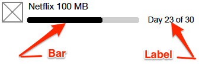
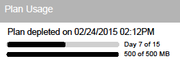

This topic details all the settings for plans. This is the information you will need when you add or edit plans.
The General tab contains most of the settings you will configure to determine how a plan looks, acts, is priced, and more.
These settings define how information about a product will appear to customers.
These settings determine who can receive the plan and how a plan's allotment can be allocated.
| Setting |
Description |
| This product can be purchased for |
Required. Determines who can receive a plan when it is purchased by a customer. Select
- Customer's account only - If you want the plan to stay with the purchaser's account.
- Gift recipient only - If you want the plan to be only giftable, that is, it can only be given to someone outside the purchaser's account.
- Customer's account or gift recipient - If you want the purchaser to have the option of purchasing either for that account or as a gift for someone outside the purchaser's account.
Gifted products cannot have more than one cycle, because when you purchase a plan, you are purchasing only the first cycle, and gifting a plan with more than 1 cycle would require the gift recipient to either pay for subsequent cycles or cancel the plan before it renews. So if you choose
- Gift recipient only, the Recurring setting is constrained to No, which means that you cannot create a multi-cycle plan that is giftable only.
- Customer's account or gift recipient, when a customer buys a plan and gifts it, the plan terminates after one cycle no matter what is entered in the Number of Cycles setting, which means the gift recipient will receive exactly one cycle.
A plan can be gifted only at purchase time. The purchase process of a gift requires a phone number to be input by the purchaser to identify the gift recipient. There are several issues that could occur and that would prevent the completion of a gift purchase, issues that include:
- Entry of an incomplete (not enough digits) or incompatible (too many digits, non-numeric digits) phone number.
- The phone number entered is for a subscriber in the same account. (Gifts can be made only to subscribers outside the purchaser's account.)
- The phone number entered is for a suspended subscriber.
- The phone number entered is for a subscriber in a suspended account.
|
| Allocation |
Required. Determines how a plan is allocated to subscribers. Select
- Exclusive - The plan allocation is available only to the subscriber that purchased the plan or to the recipient of a gifted plan.
- Assignable - The plan allocation is available to be used by only one subscriber at a time. The Assignment Method setting (available only when this option is selected) determines additional assignment options.
- Shareable - The plan allocation can potentially be used by any subscribers in the account. The Share Method and Share Type settings (available only when this option is selected) determines additional sharing options.
The Assignable and Shareable options are viable only when the tenant offers more than one subscriber per account. |
| Share Method |
When Shareable is selected as the Allocation setting, determines how that sharing occurs. Available only when the Allocation setting is Shareable. Select:
|
| Share Type |
Determines how plan allowance can be shared by subscribers. Available only when the Allocation setting is Shareable.
- Limited (aka never go below)
- Piñata
Limited is considered a "hard allocation," which means that once a subscriber is allocated an amount from the plan, no other subscriber can use that allocated amount of the plan unless there is an explicit reallocation. The total of the subscriber allocations cannot exceed 100%. For Limited, the following is true:
- A subscriber allowance cannot be changed to lower than what the subscriber has already used in the cycle.
- A subscriber allowance cannot be changed to more than what remains in the plan allowance.
- The total of all subscriber allowances cannot be more than 100%.
- The total of all subscriber allowances can be less than 100%. That is, there can be unallocated plan allowance.
- The subscriber allowance percentages that are in place at the end of the cycle carry over to the next cycle.
Piñata is like a large glass with each subscriber having a straw. Each subscriber can consume as much of the total plan allocation as they are allocated, each allocation can be any value up to the plan allocation, and the total of all allocations can be more than 100%. The amount each subscriber actually consumes each cycle is defined only by their usage pattern. For example, you have a shared 100MB data plan. An account with 2 subscribers purchases the plan and gives each subscriber 100%. The first day of the first cycle, subscriber A uses 100MB. Subscriber B's allocation for the rest of the cycle becomes 0MB. In the second cycle, subscriber B uses 100MB in the first day. Subscriber A's allocation for the rest of the cycle becomes 0MB.
For both Limited and Piñata, the total allocation to subscribers can equal less than 100%, so there could be an unallocated amount in a cycle.
See Sharing Examples for information on how sharing and allocation works.
The Share Type option is viable only when the tenant offers more than one type of sharing. |
| Assignment Method |
When Assignable is selected as the Allocation setting, determines how that assignment occurs. Select:
- Assignable at purchase only: The plan allocation is available to be used by only one subscriber at once. The plan can be assigned one time, at purchase time only, to one other subscriber (including the purchaser), at which point that is the only subscriber who can use the plan allocation.
- Reassignable: The plan allocation is available to be used by only one subscriber at once, but it can be assigned and reassigned to any subscriber on the account for the duration of the plan.
|
There are a number of ways that customers receive plans where sharing, assigning, and gifting settings will not be available to them. In those cases, default plan sharablility and assignability occurs.
Some sharing and assigning is done by the plan purchaser as part of the purchase process. In fact, some settings require sharing, assigning, or gifting selection at purchase time. But when a plan is mandatory to be received, is received via the complimentary or provisioning API, or is received as a benefit, it is not included as a part of such a purchase flow, so sharing and assigning selections that are required within that flow cannot be made.
The general rule is that if a plan is received outside of the customer-facing purchase flow, like when a plan is received automatically, and has a combination of settings that require decisions only in that customer-facing purchase flow, then the plan is assigned to the subscriber designated to receive the plan, and if that subscriber is not known, the plan is assigned to the first subscriber in the account.
| Setting |
Description |
| Service Policy |
Required. Select the service policy from Service Design Center necessary to provide customers the service you offer in the product.
The type of service policy is in parentheses after the service policy names. Make sure you select a
- voice service policy for voice plans
- messaging service policy for text plans
- data service policy for data plans
If you are not sure which service policy to choose or you do not see the service policy you want to use, contact your service policy designer.
It's important to select the right type of service policy because service policies allow only one type of service. So if you intend to create a voice plan (with a name and a description that suggest voice service) and you accidentally select a messaging service policy (and it gets through all your testing and review), a customer would buy the plan to make voice calls. But when they try to make a voice call using the plan (and if they have no other voice plans that could be used as a fallback), they will be blocked because the policy upon which the plan they do have is based allows only text messaging.
|
|
Data Usage
Voice Usage
Messaging Usage
|
Required. Determines whether there are usage limits on the plan, and if so, what the limits are. Select
- Unlimited. This means that there is no limit on usage of the plan.
-
Limited to. If you select Limited to, enter a number of megabytes (for a data product), minutes (for a voice product), or messages (for a messaging product).
You can enter only positive integers (1, 37, 5287024, etc.) in this field. Zero, negative numbers, and decimal numbers (0, 0.5, 3.1415926, 2.5, etc.) are not allowed.
1 megabyte equals 1,048,576 (or 220 or 10242) bytes.
Plans can have time limits also, set in Cycle Duration, which means that the plan usage can also be limited by time. For example, a plan might offer 10MB of data for 30 days, and when the 30 days ends, any remaining data is forfeited.
|
| Per Call Limit |
Sets the time limit for voice calls. Available only when a voice service policy is selected in Service Policy. Select from:
- None. This means that there is no limit on a voice call, up to the limit of the usage allocation of any purchased or provided voice plans.
-
Limited to. If you select Limited to, enter a number of minutes.
You can enter only positive integers (1, 37, 5287024, etc.) in this field. Zero, negative numbers, and decimal numbers (0, 0.5, 3.1415926, 2.5, etc.) are not allowed.
This setting is sometimes used to create preferred destination plans. For more information, see Create a Favorites Plan.
|
Several of the behavior settings relate to aspects of the plan cycle, aspects that include:
| Setting |
Description |
| Recurring |
Required. Defines whether the plan is a multi-cycle subscription, lasts for only one cycle, or lasts for one cycle with the option for customers to renew.
If you selected Giftable only in the This product can be purchased for setting, the only option here is No. This is because plans that are gifted can have only one cycle because when you purchase a plan, you are purchasing only the first cycle, and gifting a plan with more than 1 cycle would require the gift recipient to either pay for subsequent cycles or cancel the plan before it renews.
Select:
- Yes - To allow the plan to have as many cycles as defined in Number of Cycles. Once a customer receives the plan, it continues to renew until it is canceled.
- No - To restrict the plan to just one cycle.
- Optional - To give the plan for only one cycle initially, but to include a customer option to subscribe. When customers purchase the plan, they get only one cycle unless they select the option during purchase to subscribe and receive additional cycles. When customers receive the plan in any other way, such as through a benefit, the option to subscribe and receive additional cycles is on the plan details page in the self-service app and on their account page after the plan is received. The Number of Cycles setting determines the maximum amount of times the customer can receive the product subscription.
During any last cycle (which is also the first cycle at purchase time or at the time the plan is received, such as from a benefit), customers have the option to toggle renewability. In other words, during the plan's last cycle, customers can decide that they want to continue receiving and paying for the plan up to the Number of Cycles. Customers can also stop plan renewal during any last cycle, in which case the plan terminates at the end of the current cycle.
Any segmentation rules that include this setting, including restrictions and offers, will treat both Yes and Optional as the same. That is, if a rule is defined to match a recurring product, the rule will match if this setting for the product is either Yes or Optional.
|
| Number of Cycles |
Required. This defines the number of cycles a subscriber can receive the plan. The options determine if a plan repeats at the end of its duration. (The duration is defined either as the account cycle, if Aligned to account cycle is Yes, or as the plan's Cycle Duration value.) If so, the customer is grandfathered the plan rate and attributes when it is renewed, even if you have made significant changes to the plan or even deleted it from your catalog. Available only when Recurring is set to Yes or Optional. Select from:
- Unlimited: Subscribers can continue to receive (and pay for) the plan as long as they want.
-
Limited to: Enter the number of cycles of the plan that can be received.
You can enter only positive integers (1, 37, 5287024, etc.) in this field. Zero, negative numbers, and decimal numbers (0, 0.5, 3.1415926, 2.5, etc.) are not allowed.
Plans renew when they are set to an unlimited number of cycles or when they are "limited" to more than one cycle, that is, the number in the Limited to option is greater than 1. Renewing means that at the end of a plan cycle's duration:
- The usage counter is reset.
- The cycle starts over.
- Billing occurs.
If you are going to make the plan giftable, then it cannot renew and you must select the Limited to option and enter 1. This is because when you purchase a plan, you are paying only for the first cycle. If gifting a plan with more than 1 cycle was allowed, the recipient would be responsible for either paying for subsequent cycles or canceling the plan before it renews.
|
| Aligned to account cycle |
Required. This is the alignment, and it defines when renewals occur and are billed. Available only when Number of Cycles is set to Unlimited or set to Limited to and its value is greater than 1. Defines whether the plan is billed when the account cycles or when the plan is purchased. |
| Cycle Duration |
Required. This defines how long a plan cycle is. Available only when Aligned to account cycle is set to No. Select from:
-
Unlimited. This means that there is no time limit for subscribers to consume the allotment of the plan.
If a plan cycle duration is unlimited, then you must select Limited to in the Number of Cycles setting and enter 1. Plans with an unlimited cycle duration may not have more than one cycle.
-
Lasts, then enter a number and select a unit of measure from minute(s), hour(s), week(s), day(s), or month(s). This sets a time limit to consume the plan's allotment. Any allotment unused when the time limit is reached is lost.
You can enter only positive integers (1, 37, 5287024, etc.) in this field. Zero, negative numbers, and decimal numbers (0, 0.5, 3.1415926, 2.5, etc.) are not allowed.
|
| Prorated on first cycle |
Required. This is proration, and it defines how much is billed and allotted for the first cycle. Available only when Aligned to account cycle is set to Yes.
Best Practice: When you have a plan that has more than one account cycle and aligned to the account cycle, you'll almost always want to set this to Yes. If you set it to No, a customer will be charged full price for the plan even if they buy it on the last day of the account cycle.
While that may be OK for plans with a fixed amount of consumption, your business needs may dictate otherwise, especially for unlimited plans
For example, if if a plan offers 30MB of data for $30/month and a customer whose account cycle begins on the 1st buys the plan of the 20th, they will get a prorated amount of 10MB for a prorated cost of $10. But if you offer an unlimited amount of data for $30/month and a customer whose account cycle begins on the 1st buys the plan on the 30th, they will get an unlimited amount of data for $1. So for unlimited plans, you may want to consider setting this option to No.
Even when a plan is prorated normally, when it is offered in an exchange category in a carousel and a customer receives the plan through the exchange category in the carousel, no proration occurs. The customer receives the full allotment for the remainder of the cycle in which it is received and is charged the full cycle price.
|
| Usage Display |
When customers buy plans, they can view how much they have used of that plan (or how much they have left to use) and how long they have used the plan (or how long they have left to use the plan) in the My Plans section of the self-care app. Plans can have a consumable element (it's allocation, in minutes, messages, or megabytes) and a duration element (how much time is available to use the plan).
The usage display can show the allocation usage, the time usage, or both. The ItsOn system defines a default display of usage, and what's shown for that default depends on other plan settings. You can also define a custom usage display for the plan, which overrides the default. Select:
- Custom: To select what type of usage information your subscribers will see for this plan and how it will be shown. When you select Custom, two additional options become available: Duration and Units. Use these options to configure exactly what users will see on their devices.
- Default: To use the default usage display property (defined below) for the type of plan and its configuration.
Default Usage Display
| Plan Configuration |
Usage Display Shows |
Example |
|
Plans with both unit-based and time-based limits. For example, a plan that offers 10 MB of data that must be used within a 1-month period.
|
Units and Duration
Shows a bar and label for both units used and available and time used and available.
|
 |
|
Plans with time-based limits and unlimited usage. For example, a plan that offers unlimited usage that must be used within a 1-week period.
|
Duration
Shows a bar and label for time used and available.
|
 |
| Plans with unit-based limits and unlimited duration. For example, a plan that offers 100 MB of data that has an unlimited cycle. |
Units
Shows a bar and label for units used and available.
|
|
| Plans with unlimited usage and unlimited duration. For example, a plan that offers unlimited data and an unlimited cycle. |
Depends on the Display Detailed Usage Data setting:
- Yes: Shows a link to view a page with usage details.
- No: Shows nothing.
|
|
Summary of Usage Display Defaults
Usage display defaults depend on your usage and duration choices in the Voice/Messaging/Data Usage and Cycle Duration settings:
- Unlimited usage and unlimited duration: summary or name only (no duration or unit bars or labels)
- Unlimited usage and limited duration: cycle duration only (duration bar & label, no units bar or label)
- Limited usage and unlimited duration: unit data only (units bar & label only, no duration bar or label)
- Limited usage and limited duration: unit and duration data (units bar and label and duration bar and label)
Bar and Label Direction and Position
The direction of bar movement and the position of labels in relation to the bar (to the right or left of the bar) depend on tenant settings and/or language (left-to-right or right-to-left) settings.
First, whether the bars are count up (for example, Day 7 of 15 or 300 of 500 Mins) or count down (for example, 8 days remaining or 500 MB remaining) depends on a tenant setting.
Then, the direction that the bar moves (or fills) depends on a tenant setting.
Finally, if there is a label, its location depends on language settings. If the language setting is left-to-right, the label will be to the right of the bar. If the language setting is right-to-left, the label will be to the left of the bar.
|
| Duration |
Duration represents the length of the cycle. It is one of the options available for you to configure when you select Custom for the Usage Display setting. The duration display contains two components, a progress bar that shows the relative amount compared to the total amount of duration and a text label that shows the actual amount of the cycle. Select:
- Bar and Label (default): To show both the bar and the label.
- Bar: To show only the bar. (Note, exact number data, such as 20 of 30 days will not be shown).
- Label: To show only the label.
- None:: To show no duration information.

|
| Unit |
Units represent the consumable element of a plan allocated to users. It is one of the options available for you to configure when you select Custom for the Usage Display setting. The units display contains two components, a progress bar that shows what part of the whole amount of time has been used and a text label that shows the actual amount of the time used. Select:
- Show (default): To show the Units bar and label.
- Hide: To hide the Units bar and label.
|
| Display Detailed Usage Data |
Select Yes to allow users to see detailed per-call, per-message, and per-data-session information on their account page.
|
| Terminates when usage allowance runs out |
Available only when Renewal is Does not renew because this setting is used only for one-time plans. Determines if a plan is terminated when its usage allowance runs out. The choices are:
- Yes (default): When a plan's usage allowance runs out, the plan is terminated and is moved to the Subscription History or Plan History list immediately.
- No: When a plan's usage allowance runs out, the plan remains unterminated and in the Subscriptions or My Plans list until it expires based on the validity duration.
Note: A reason why you might want to choose No here is so that customers can upgrade one-time plans if the usage allowance runs out before its expiration. Once a plan terminates, it can't be upgraded.
This is how a depleted plan would look when you select No:

The choice here can also affect when intercept notifications are triggered. One of the intercept notification rule options is a reason, and the two choices are Plan Capped and Plan Not Present. If a plan terminates, then it would match the Plan Not Present option in the notification. If a plan is not terminated when its allocation runs out (the No option of this setting), the plan would still be considered active until its duration expires. This matches the Plan Capped intercept notification option, and you could design an intercept notification to provide easy upgrade options.
|
| Visibility |
Determines whether or not the plan is visible to customers.
If this is set to Hide, the plan is not visible for purchase in the store nor is it visible in a customer's account information. It is not shown as part of a bundle when included in a bundle, and usage and intercept notifications are not triggered by hidden plans. For more on how hidden plans work in bundles, see Hidden Products in Bundles.
A plan cannot be hidden unless its price is equal to 0 (zero). This is because at checkout, a non-zero priced plan in the cart will result in a total price that is different from the sum of the prices of the visible products, which could cause customer confusion. So this setting is unavailable until a price value greater than 0 (zero) has been entered for the plan.
|